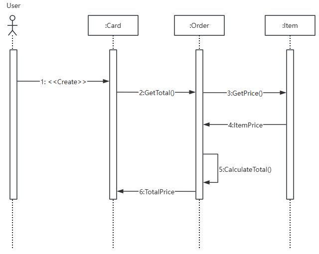

对象名:类名
:类名；不显示对象名，即表示他是一个匿名对象
对象名；不显示类明
角色是提需求的；系统外部
对象是干活的；系统内部
消息的发送者把控制传递给消息的接收者，然后停止活动，等待消息的接收者放弃或者返回控制。用来表示同步的意义
消息发送者通过消息把信号传递给消息的接收者，然后继续自己的活动，不等待接受者返回消息或者控制。异步消息的接收者和发送者是并发工作的
返回消息表示从过程调用返回
